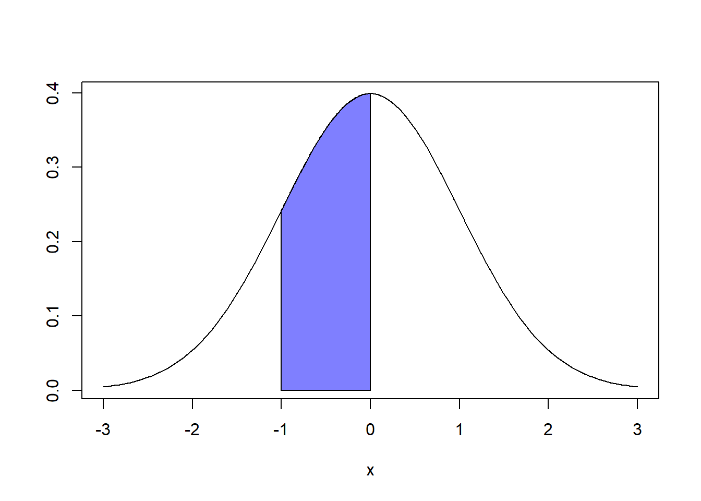
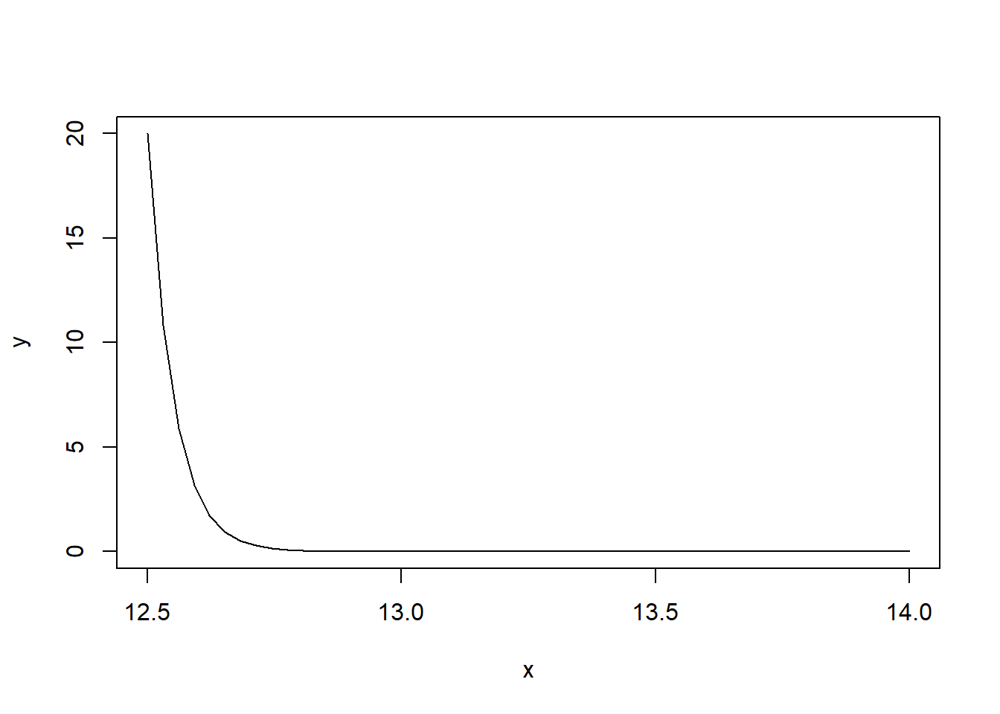
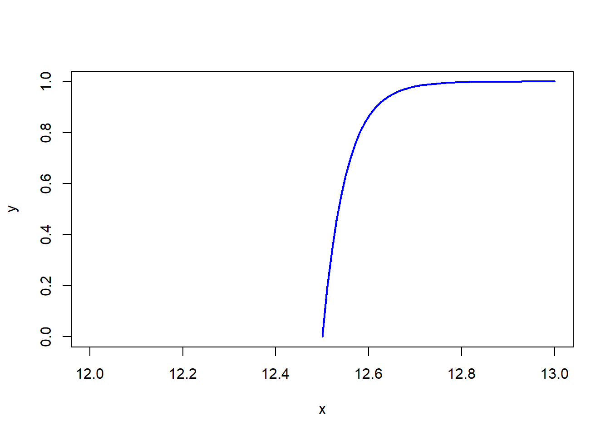
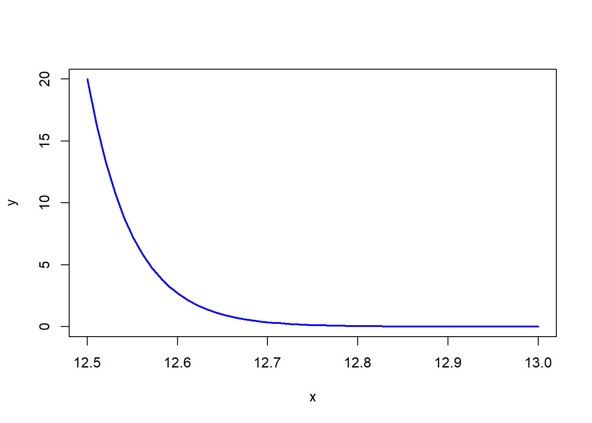
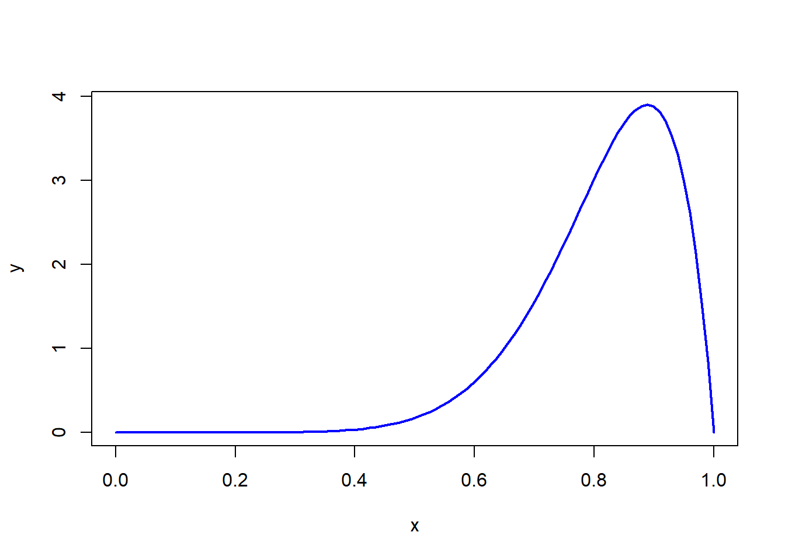

Variable aleatoria Continua
Es una variable aleatoria que puede tomar cualquier valor en un intervalo dado, son incontables y están relacionados con números reales.
Ejemplo
El tiempo que lleva completar un examen para una prueba de 60 minutos
Valores posibles = todos los números reales en el intervalo [0,60]
Edad de un fósil
Valores posibles = todos los números reales en el intervalo [edad mínima, edad máxima]
Millas por galón para un Toyota
Valores Posibles = todos los números reales del intervalo [MPG mínimo, MPG máximo]
La principal diferencia entre las variables aleatorias continuas y discretas es que la probabilidad continua se mide a lo largo de intervalos, mientras que la probabilidad discreta se calcula en puntos exactos.
Como son tantos valores posibles, ningún valor posible de la variable aleatoria tiene probabilidad positiva, esto es, P(X=c)=0 con cualquier valor posible de c
Sea X una variable aleatoria continua Entonces, una distribución de probabilidad fdp de X es una función f(x) tal que para dos números cualesquiera a y b con a<b
\[P(a<X<b)=\int_a^bf(x)dx\]
Es decir, la probabilidad de que X asuma un valor en el intervalo [a,b] es el área sobre este intervalo y bajo la gráfica de la función de densidad

\[0\leq f(x) \leq 1\]
\[\int_{lim inf}^{lim sup}f(x)dx=1\]
Para cualquier valor posible de c \[P(X=c)=0\]
\[F(x)=P(x\leq x)=\int_{lim inf}^{x}f(x)dx\] Proposición
Sea X una variable aleatoria continua con función de densidad de probabilidad f(x) y función acumulada F(x) entonces para un numero a:
\[P(X>a)=1-P(x\leq a) =1-F(a)\] Para dos numeros cualesquiera a y b con b>a
\[P(a\leq x \leq b)=P(x\leq b)- P(x\leq a)= F(b)-F(a)\]
Ejemplo
x denota el diámetro del agujero perforado en una hoja de metal, el diámetro objetivo es de 12.5 mm, perturbaciones aleatorias ocasionan agujeros más grandes.La distribución de x es:
\[f(x)=20e^{-20(x-12.5)}\quad x>12.5 mm\]
x= seq(12.5,13, length =50)
y=20*2.71828^(-20*(x-12.5))
plot(x,y,type="lines",col="blue",lwd=2)## Warning in plot.xy(xy, type, ...): plot type 'lines' will be truncated to first character
2.Obtenga la función acumulada
\[F(x)=P(x\leq x)=\int_{lim inf}^{x}f(x)dx\]
\[F(x)=\int_{12.5}^{x}20e^{-20(x-12.5)}dx\] \[F(X)= \left\{ \begin{array}{c} \displaystyle 1-e^{-20(x-12.5)} \quad x\geq12.5 \\ 0 \qquad x<12.5 \end{array} \right. \] 3. Grafique la función acumulada
## Warning in plot.xy(xy, type, ...): plot type 'lines' will be truncated to first character
Si una parte con diámetro es más grande que 12.6 mm se desecha, ¿Qué proporción de partes se desecha?
dos caminos - Realizando la integral
\[F(x)=\int_{12.6}^{\infty}20e^{-20(x-12.5)}dx\] - Evaluando en la función acumulada \[p(x\geq12.6)=1-p(x<12.6)\] \[=1-(1-e^{-20*(x-12.5)})\] \[=e^{-2}=13.5\]
## Warning in plot.xy(xy, type, ...): plot type 'lines' will be truncated to first character
Probabilidad es un valor entre 0 y 1
\[E(x)=\mu_x= \int_{lim inf}^{limsup}xf(x)dx\] \[E(x^2)= \int_{lim inf}^{limsup}x^2f(x)dx\]
\[V(x)=E(x^2)-\mu^2\]
Ejemplo
Sea x la cantidad de espacio ocupado por un artículo en un contenedor, la pdf de x es:
\[ f(x)= \left\{ \begin{array}{c} 90x^8(1-x) \quad 0<x<1 \\ 0 \quad eoc \end{array} \right. \]
x= seq(0,1,length=100)
y=90*x^8*(1-x)
plot(x,y,type="lines",col="blue",lwd=2)## Warning in plot.xy(xy, type, ...): plot type 'lines' will be truncated to first character
\[ F(x)= \left\{ \begin{array}{c} 0 \quad x<0\\ x^9(10-9x) \quad 0<x<1 \\ 1 \quad x>1 \end{array} \right. \] 3. Cual es la probabilidad
\[P(x\leq 0.7)\] \[P(x>0.8)\] 4. Halle E(x), v(x)
Videos
Función de distribución de probabilidad continua
\[ f(x)= \left\{ \begin{array}{c} \frac{1}{2}x \quad 0\leq x\leq 2 \\ 0 \quad e.o.c \end{array} \right. \]
Grafique f(x)
Halle la función acumulada
Grafique F(x)
d.Halle las probabilidades de que:
\[p(x\leq 1)\] \[P(0.5 \leq x \leq 1.5)\] \[P(x>1.5)\]
\[ f(x)= \left\{ \begin{array}{c} kx^2 \quad 0\leq x\leq 2 \\ 0 \quad e.o.c \end{array} \right. \]
Determine el valor de la constante K
Grafique f(x)
Halle F(x)
Grafique F(x)
¿Cuál es la probabilidad de que la disertación termine dentro de un minuto final de la hora?
¿Cuál es la probabilidad de que la disertación continue entre 60 y 90 segundos?
¿Cuál es la probabilidad de que la disertación continúe durante por lo menos 90 segundos después del final de la hora?
Halle E(x), v(x)
\[ f(x)= \left\{ \begin{array}{c} 0.09375(4-x^2) \quad -2\leq x\leq 2 \\ 0 \quad e.o.c \end{array} \right. \]
Grafique f(x)
Halle F(x)
Grafique F(x)
calcule
\[P(x>0)\] \[P(-1<x<1)\] \[P(-0.5<x<0.5) \] e. Halle E(x), v(x)